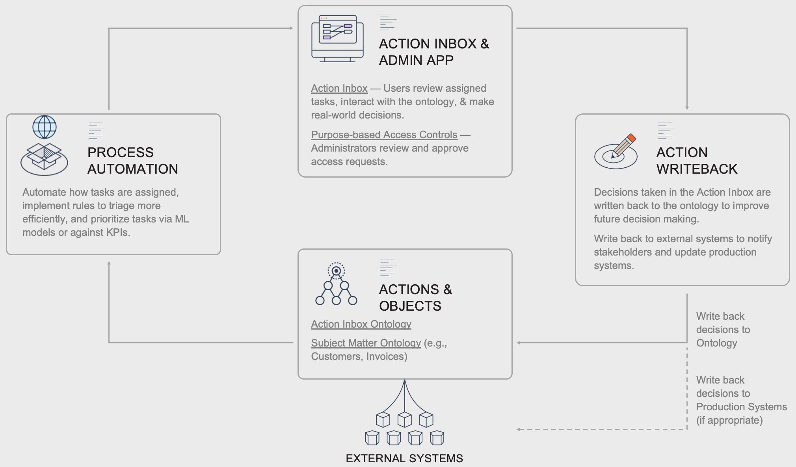

Operational processes at any organization, whether it is ensuring that invoices are handled correctly, power shutoffs are managed to avoid wildfire risk, or R\&D data is managed and leveraged efficiently and safely, require users to interface with a variety of source systems, resolve any conflicts among them, interact with specialized applications, make operational decisions, and record those decisions to improve the process and feed others downstream.
Foundryâs Data Connection and Ontology allow organizations to implement this pattern in days instead of months and continue to implement, customize, and maintain them safely and efficiently.

Consider any critical business process, whether it is ensuring that invoices are handled correctly, power shutoffs are managed to avoid wildfire risk, or R\&D data is managed and leveraged efficiently and safely. These disparate processes all share the same pattern: they require many different users and types of users to interact with a variety of source systems and other users in order to make operational decisions that are critical for the organization. Moreover, these processes evolve over time and the tools used need to evolve with them while remaining secure and maintainable.
Yet, in practice, these processes are often implemented as custom software that is purpose-built to interact with a particular set of datasources, difficult to manage or update, siloed from other such software, and follows its own security model. Alternatively, the process is managed via spreadsheets and emails, which have technical limitations, are error-prone and insecure, and are difficult to manage and collaborate on.
In Foundry, organizations instead implement the pattern below to integrate all of the relevant data sources into an ontology, from which Workshop apps are used to build custom apps which write back to the ontology and external systems. All of this is governed safely using Foundryâs Platform Security Model (often across multiple organizations such as vendors), and can be easily maintained and improved on via Foundryâs version control systems.
Action Inbox
An Action Inbox in Workshop which allows different users to be assigned tasks, view and explore the key aspects of the ontology, and take actions to make real-world decisions.
For example, in a process for doing Invoice Dispute Resolution, invoices are assigned to users in the correct department, where they review the customer service actions that are taken, see potential causes of injury, and submit a clear explanation for the invoice, which is shared back with the customer downstream of the application.
Related products:
Operational Process Ontology
Underlying the Action Inbox is an Ontology, which models the operational process as objects with properties and relations. For example:
Users are available in Workshop automatically and do not need to be modeled in the ontology, but can be if it is helpful to associate them with additional properties such as department or location.
Related products:
Subject Matter Ontology
In addition to the functional ontology for the Action Inbox, there is a digital twin of the subject matter, which serves as the single source of truth that users reference to make their decisions. The objects, properties, and relations will differ depending on the use case, but are typically shared across many use cases and are visualized within Object Explorer views (object-centric), Quiver (charting and dashboarding), or Vertex (network analysis).
For example, for Public Safety Power Shutoff (PSPS) Scoping, objects would include assets like transformers and circuits, weather threshold breaches, and grid configurations.
Related products:
Decision writeback
Actions taken in the Action Inbox trigger writeback to the process ontology (e.g. creating, updating, or reassigning tasks), but more importantly to the subject matter ontology, where it updates the digital twin and then writes back to external sources.
For example, for Public Safety Power Shutoff (PSPS) Scoping, decisions made in the inbox mark customers (objects in Foundry) as unsuccessfully contacted to be recontacted later as well as push notifications to the external automated message broadcast system.
Related products:
Business logic and automation
Logic that drives the Action Inbox is often implemented in pipelines, e.g. determining which actions to map to which users or prioritizing which actions to implement first. These often leverage models created and managed in Foundry Machine Learning.
For example, Invoice Dispute Resolution uses upstream logic to determine which department is best suited to handle a given inquiry.
Related products:
Regardless of the Pattern used, the underlying data foundation is constructed from pipelines and syncs to external source systems.
Data integration pipelines
Data integration pipelines, written in a variety of languages including SQL, Python, and Java, are used to integrate datasources into the subject matter ontology.
Foundry can sync data from a wide array of sources, including FTP, JDBC, REST API, and S3. Syncing data from a variety of sources and compiling the most complete source of truth possible is key to enabling the highest value decisions.
(Optional) SAP and Salesforce Connector
Many organizational processes rely on SAP and Salesforce data, and Foundry has out-of-the-box connectors and integration pipelines for both sources that ingest and create ontologies in just a few clicks. Invoice Dispute Resolution, for example, uses both of these sources.
Want more information on this use case pattern? Looking to implement something similar? Get started with Palantir. â